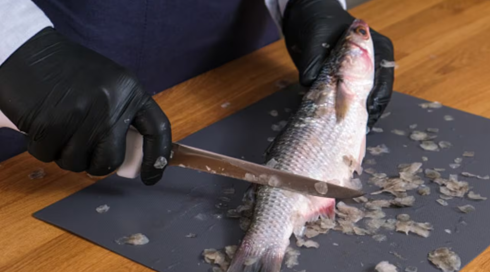
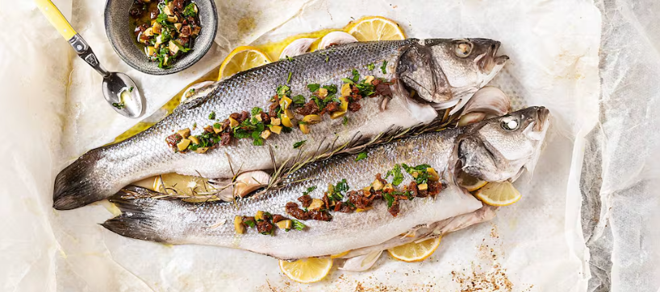
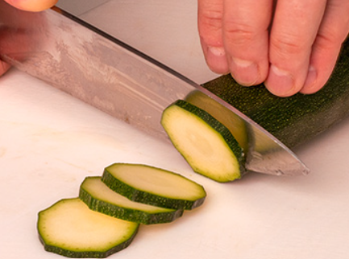
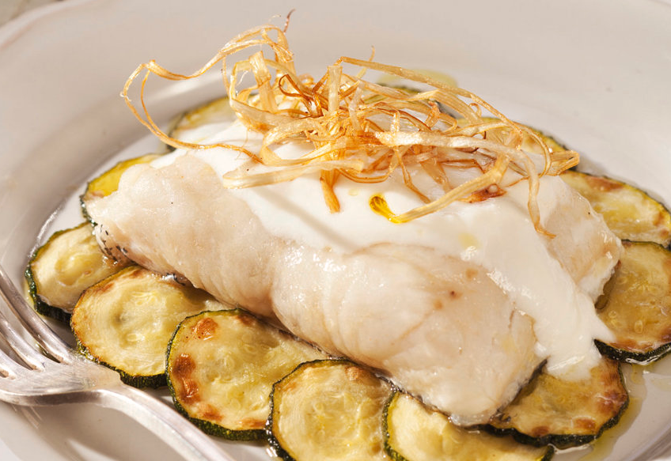
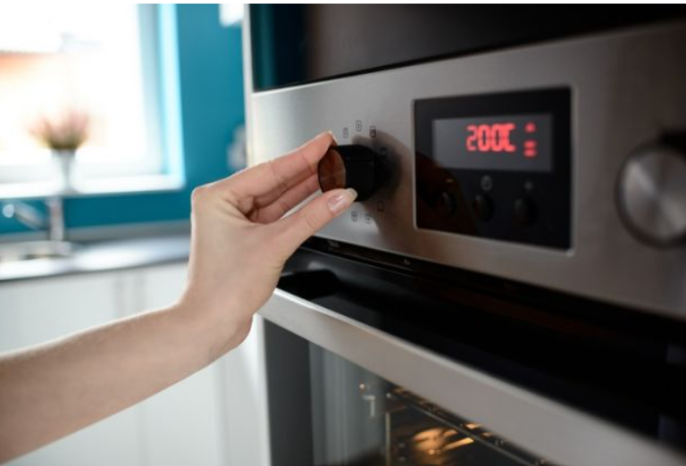

Lavar las 2 doradas, limpiar escamas y residuos de la tripa. Hacer dos pequeños cortes en diagonal de cada lado.
Condimentar el pescado con las especias con excepción del romero y el tomillo Reservar
Lavar el zuchinni y cortar en rodajas, hazer lo mismo con la cebolla pero esta la cortamos en juliana (tiras). Poner sobre un molde para hornear, de preferencia de cristal. Añadir sal y orégano.
Colocar los pescadoa sobre el zuchinni y la cebolla, añadir el romero, orégano y el tomillo. Colocar 2 rodajas de limón sobre el pescado.
Precalentar el horno. Hornear por 20 minutos a 250 grados.
